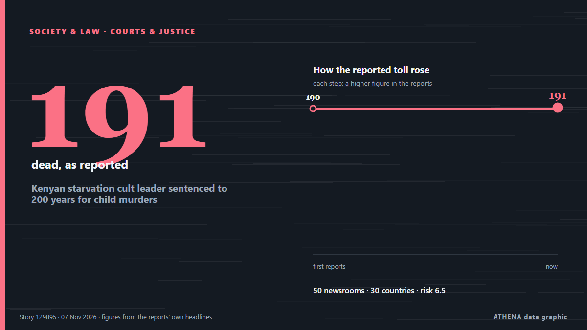

Gerichte und Justiz
GesponsertPräsentiert von  Cybernetics and Artificial Intelligence Lab Welcome to the Cybernetics and Artificial Intelligence Laboratory, established at the Department of Business Administration of the National and Kapodistrian University of Athens. The lab is headed by Professor Dimitrios Thomakos. The lab aims to do research that can be published in top venues. Our research uses tools and methods of Artificial Intelligence, and lies in the following areas: - Forecasting - Decision making - Cyber security - Finance We are always looking forward to collaborating with exceptional students!
Cybernetics and Artificial Intelligence Lab Welcome to the Cybernetics and Artificial Intelligence Laboratory, established at the Department of Business Administration of the National and Kapodistrian University of Athens. The lab is headed by Professor Dimitrios Thomakos. The lab aims to do research that can be published in top venues. Our research uses tools and methods of Artificial Intelligence, and lies in the following areas: - Forecasting - Decision making - Cyber security - Finance We are always looking forward to collaborating with exceptional students!
| 25. Okt. | 0 |
|---|---|
| 26. Okt. | 0 |
| 27. Okt. | 0 |
| 28. Okt. | 0 |
| 29. Okt. | 0 |
| 30. Okt. | 0 |
| 31. Okt. | 0 |
| 1. Nov. | 1 |
| 2. Nov. | 3 |
| 3. Nov. | 5 |
| 4. Nov. | 5 |
| 5. Nov. | 8 |
| 6. Nov. | 2 |
| 7. Nov. | 0 |
Schlagzeilen werden auf Englisch angezeigt, wie veröffentlicht.

Kenyan starvation cult leader sentenced to 200 years for child murders
A self-proclaimed Kenyan preacher was sentenced to 200 years in prison on Friday for the murder of 190 children and one adult in an infamous starvation cult. von IOL
Russell Brand found guilty of rape and sexual assault
Six women alleged that the British comedian had sexually assaulted them at his home, in hotels and public bathrooms. von NBC News (World)
Tanzania: Opposition leader Tundu Lissu jailed for four years
Tanzanian opposition leader Tundu Lissu has been sentenced to four years in prison after being cleared of treason. von DW English
California governor commutes sentences for state’s 548 death row inmates
California has historically had the largest population of people on death row in the US. von BBC News
Somalia’s top court rejects president’s term extension amid political crisis
The country's first nationwide elections since 1969 are due next year - a timetable now thrown into doubt. von BBC News
Hong Kong activist Joshua Wong's 10-year prison sentence draws international criticism
HONG KONG: Joshua Wong was one of the poster boys of Hong Kong’s pro-democracy movement, seen as a thorn in Beijing’s side as it seeks to stamp its authority on the territory. von New Straits Times
‘Rohit and Kohli are still playing well’, says New Zealand captain Santner
Pujara feels Kohli's position at number three gives him more time to settle in and build an innings. von Times of India
Helsinki court sentences 2 Fitburg crew members to prison over subsea cable damage
Russian captain receives 3.5-year term, Azerbaijani boatswain sentenced to 2 years, 10 months. von Anadolu Agency (English)
Ex-Diddy prosecutor to lead Cornell gang rape investigation
New York's attorney general on Wednesday named an ex-federal prosecutor who oversaw the criminal case against Sean "Diddy" Combs to lead an investigation into an alleged gang rape at Cornell… von The Korea Times
UK government defends Palestine Action ban in Supreme Court
The UK Supreme Court heard a defense from a government lawyer regarding the classification of Palestine Action as a terrorist organization. von Arab News
Top UN court to rule Nov 19 on Myanmar/Rohingya genocide case
The ICJ has spent seven years considering allegations that Myanmar's brutal repression of the Rohingya violated the 1948 UN Genocide Convention. von Free Malaysia Today
5 things to know about Nigerian professor Dapo Akande elected ICJ judge
Nigerian-born legal scholar Professor Dapo Akande has been elected as a judge of the International Court of Justice (ICJ), marking a significant milestone in his career and a diplomatic victory for… von Vanguard
Equatorial Guinea Seeks Life for Soldier
Prosecutors asked a military court in Equatorial Guinea for life in prison for a sergeant accused of killing two women. von The Rio Times
Seoul court upholds ex-president Yoon's election conviction
Former South Korean president Yoon Suk Yeol declared martial law in December 2024, ordering troops to shut down parliament, before lawmakers defied the military to vote down the decree. von CNA (Channel NewsAsia)
Dozens arrested outside Supreme Court hearing on Palestine Action ban
The banned UK group, which targets Israel's war machine, has inspired activists in Europe and beyond. von Al Jazeera English
Rickshaw driver facing trial over death of mother of two after Westlife gig
Woman was on her way to meet her husband with two friends after concert. von Irish Independent
Monfils gives emotional farewell in Paris with wish for daughter Skai
PARIS: Gael Monfils turned his tennis farewell into a message for his young daughter Skai on Tuesday, telling her he hoped she would one day play in Paris as he thanked fans in the French capital… von Business Recorder
Poland: Dispute Over Constitutional Court Escalates
Poland’s dispute over the constitutional court has escalated, with President Nawrocki blocking the swearing-in of five newly elected judges. von Kyiv Post
US Judge Dismisses Trump Administration’s Harvard Admissions Probe Case
BOSTON: A federal judge on Monday dismissed a lawsuit by President Donald Trump’s administration seeking to force Harvard University to turn over records for an investigation into whether it… von Arab News